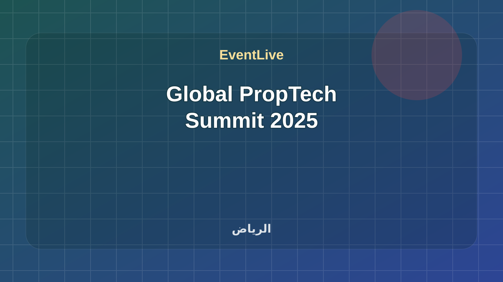

منتهية · فعالية
Global PropTech Summit 2025
انعقدت القمة العالمية لتقنيات العقار 2025 في الرياض يومي 26 و27 أكتوبر، ويُحفظ برنامجها الرسمي هنا بجلساته عن الذكاء الاصطناعي والمدن الذكية والتنظيم والاستثمار العقاري.
المدينةالرياض
البداية٢٦/١٠/٢٠٢٥، ٩:٠٠ ص
النهاية٢٧/١٠/٢٠٢٥، ٦:٠٠ م
الحالة الحيةجاري حساب الوقت...
8/8
جاهزوقت واضح
جاهزمصدر موثوق · مصدر معتمد
جاهزمدينة محددة
جاهزموقع قابل للوصول
جاهزأجندة متعددة الجلسات
جاهزرابط مشاركة
جاهزتصنيف مفهوم
جاهزجمهور مناسب
ما يحتاجه الزائر بسرعة
متى تبدأ Global PropTech Summit 2025؟
تبدأ Global PropTech Summit 2025 في ٢٦/١٠/٢٠٢٥، ٩:٠٠ ص وتنتهي في ٢٧/١٠/٢٠٢٥، ٦:٠٠ م بتوقيت السعودية.
أين تقام Global PropTech Summit 2025؟
تقام الفعالية في الرياض، Mandarin Oriental Al Faisaliah.
هل المعلومات موثوقة؟
تعتمد EventLive على Global PropTech Summit Official أو رابط دليل ظاهر في صفحة الفعالية، مع إبقاء رابط المصدر للمراجعة.
هل يوجد جدول حي لهذه الفعالية؟
نعم، تعرض الصفحة جدولًا حيًا أو جلسات قابلة للمتابعة حسب الوقت.
محاور البرنامج
البرنامج الرسمي للقمة العالمية لتقنيات العقار 2025: 40 فقرة مكتملة الوقت عبر يومين.
المدة26 و27 أكتوبر 2025
المزودGlobal PropTech Summit
المميزات
- 40 فقرة بوقت بداية ونهاية
- بحث وتصفية حسب اليوم
- مرجع تاريخي للبرنامج الرسمي
المتطلبات
- هذه نسخة منتهية محفوظة من برنامج المنظم الرسمي.
برنامج موثق
الجدول الحي
40 جلسة · بتوقيت الرياض
يجري الآنلا توجد جلسة جارية الآن
التالييُحدد حسب الوقت الفعلي
40 جلسة
Reception
Tour & Exhibition Opening
Opening Ceremony
REGA CEO Keynote
NHC Innovation CEO Keynote
H.E. Minister of Municipalities
Agreements & Announcements
THE CAPITAL MARKET AUTHORITY: EMPOWERMENT AND A PACKAGE OF ENHANCEMENTS
FROM MUD TO MODERNITY BUILDINGS THAT THINK. CITIES THAT LEARN. PEOPLE THAT LIVE.
BREAK
THE EFFORTS OF AUTHORITIES IN DEVELOPING THE PROPTECH SECTOR AND THEIR ECONOMIC IMPACT
DIGITAL TRANSFORMATION IN THE REAL ESTATE SECTOR: THE ROLE OF SMART JUDICIAL SERVICES IN ACCELERATING TRANSACTIONS
TECHHUB BY NHC INNOVATION
THE REAL ESTATE REGISTRY… REDEFINING THE FUTURE OF PROPTECH
VISION 2030 & PROPTECH: TRANSFORMING SAUDI ARABIA’S BUILT ENVIRONMENT
SMART REAL ESTATE TRANSFORMATION: ALANDALUS’S VISION IN THE PROPTECH ERA
FROM REGULATION TO INNOVATION: HOW EU CROWDFUNDING IS RESHAPING PROPTECH
PROPTECH... SMART ENVIRONMENT OF PROPERTIES
THE ULTIMATE BUYER EXPERIENCE FOROFF-PLAN PROJECTS
THE ADOPTION OF PROPTECH AND ITS RELATIONSHIP TO THE SUSTAINABILITY OF THE REAL ESTATE SECTOR
HOW AI IS REVOLUTIONIZING LAND
CONSCIOUS PROPERTY TECHNOLOGY AND
EMERGING TRENDS IN PROPTECH : HOW TOKENIZATION WILL REDEFINE
BEYOND THE REALTOR: BUILDING AN END-TO-END AI- POWERED PROPTECH ECOSYSTEM
PROPTECH IN ACTION: TRANSFORMING SUPPLY CHAINS & BUILD-TO-RENT COMMUNITIES
THE FUTURE OF PROPTECH: GLOBAL TRENDS SHAPING REAL ESTATE INNOVATION
AFFORDABLE HOUSING AT SCALE AND MARKET REFORMS
PROPTECH AT SCALE: DRIVING INNOVATION ACROSS 250 MILLION M² OF GLOBAL COMMERCIAL REAL ESTATE
PROPTECH AND PROCUREMENT: BIG WINS IN SAVINGS AND GOVERNANCE
BREAK
BRIDGING PROPTECH INNOVATION WITH TRADITIONAL REAL ESTATE: BUILDING DIGITAL ECOSYSTEMS IN SAUDI ARABIA
ACCELERATING PROPTECH ADOPTION IN LEGACY REAL ESTATE: STRATEGIES FOR SAUDI ARABIA’S NEXT DECADE
REIMAGINING REAL ESTATE: BY SAKANI
AWJ HOLDING COMPANY DIRECTOR OF DIGITAL AND TECHNOLOGY KEYNOTE
AI-DRIVEN URBAN FUTURES: TRANSFORMING PROPERTY AND INFRASTRUCTURE FOR THE NEXT GENERATION OF SMART CITIES
PROPTECH WITHOUT BORDERS: CO-CREATING THE CITIES OF TOMORROW
FROM SMART BUILDINGS TO SMART FINANCING: THE NEXT FRONTIER OF PROPTECH
REINVEST’S APPROACH TO TRANSFORMING THE COMMERCIAL REAL ESTATE SECTOR IN SAUDI ARABIA
SCALING PROPTECH STARTUPS: FROM INNOVATION TO IMPLEMENTATION IN SAUDI REAL ESTATE
HUMAN-CENTRIC PROPTECH: REDEFINING TENANT EXPERIENCE IN THE